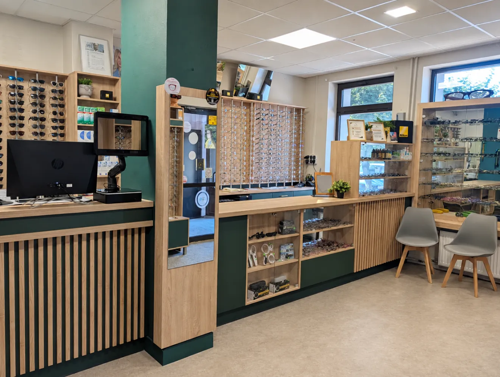
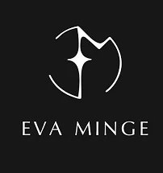
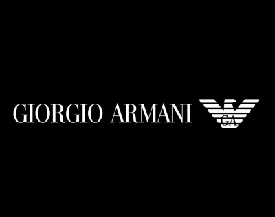
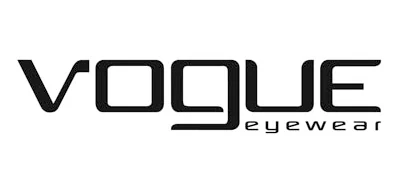
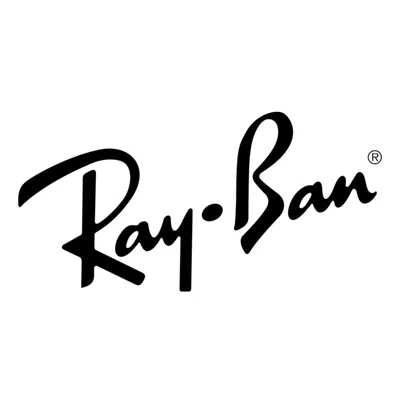

Kolekcje modowe
Okulary, które są też dodatkiem do stylu.
Dla klientów, dla których oprawy to nie tylko korekcja wzroku, ale też element stylizacji — w salonie ARTEX znajdziesz kolekcje znanych marek modowych.

Marki w salonie
Kolekcje projektantów i domów mody
Wybrane marki modowe dostępne w salonie ARTEX — oprawy łączące funkcjonalność z wyrazistym designem.

Eva Minge
Kolekcja polskiej projektantki mody — oprawy o wyrazistym, kobiecym charakterze.

Giorgio Armani
Klasyczna elegancja i precyzyjne wzornictwo włoskiego domu mody.

Vogue Eyewear
Modne, aktualne fasony dla osób śledzących najnowsze trendy.

Ray-Ban
Kultowe, rozpoznawalne na całym świecie oprawy i okulary przeciwsłoneczne.
Dlaczego warto
Styl i komfort w jednej oprawie
„Dobrze dobrane okulary powinny być nie tylko modne, ale też wygodne od rana do wieczora, dostosowane do codziennego stylu życia.”
- bieżące kolekcje sezonowe
- doradztwo w doborze fasonu do rysów twarzy
- możliwość zamówienia szkieł korekcyjnych do każdej oprawy
- serwis i regulacja po zakupie
FAQ
Pytania o oprawy markowe
W salonie znajdziesz kolekcje Eva Minge, Giorgio Armani, Vogue Eyewear i Ray-Ban, a także popularne i przystępne cenowo modele. Łącznie to ponad 10 000 opraw.
Tak. Do każdej oprawy, także markowej, możemy zamówić szkła korekcyjne zgodne z Twoją receptą.
Tak. Doradzamy w doborze fasonu do rysów twarzy, tak aby oprawy dobrze wyglądały i były wygodne na co dzień.
Tak. Mamy oprawy z materiałów bezpiecznych dla skóry: tytanu, stali nierdzewnej, materiałów bez niklu, z powłoką z 24-karatowego złota, z acetatu i optylu.
Okulary przeciwsłoneczne wykonujemy z korekcją zgodną z receptą, z filtrami UV i opcją polaryzacji. O dostępność konkretnego modelu z korekcją zapytaj w salonie: 531 221 341.